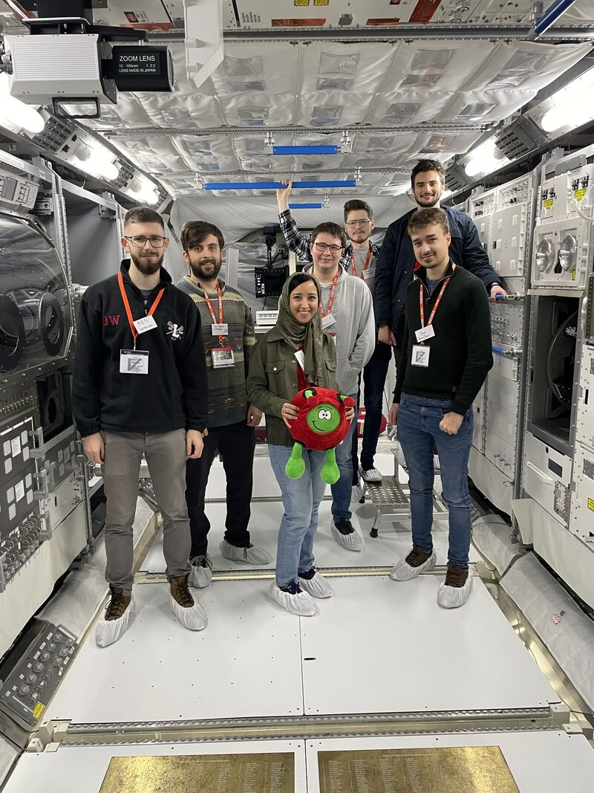
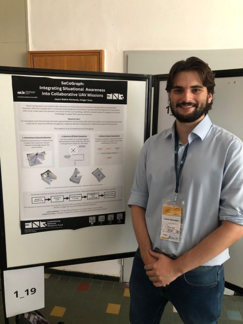

Current and past research projects, with focus on Semantic Relational SLAM for UAVs, robotic manipulation, motion planning, and human-robot interaction.
Current Research
Research Project Title
Period
– Present
Advisor
Prof. Dr Holger Voos
Lab / Group
SnT, University of Luxembourg, Kirchberg, Luxembourg
Focus
Develop C++ and Python software for Semantic Relational SLAM and autonomous UAV systems, linking camera--IMU state estimation, perception, semantic mapping, navigation, planning, and control. Integrate, debug, and deploy onboard autonomy on physical UAVs using ROS~2, PX4, embedded Linux, Raspberry Pi, camera/IMU sensing, and OpenVINS visual--inertial odometry. Evaluate algorithm and system performance through simulation, laboratory, hardware, and flight testing; analyze estimation and autonomy data and trace failures across software, sensors, and vehicle interfaces. Build reproducible Docker-based development, deployment, and camera--IMU calibration workflows with Kalibr. Research fleet-level and multi-vehicle coordination using shared semantic maps, resource-efficient navigation, and mission-aware collaborative planning.
Led ADCS design and implementation for a 3U CubeSat carrying a GNSS-interference sensing payload and new solar-sail design; translated the mission concept of operations into subsystem requirements, architecture, interfaces, and a verification plan. Developed embedded C flight software and a C++/CMake Linux simulation of rigid-body dynamics, attitude estimation, and control across mission modes. Implemented TRIAD and an EKF to fuse sun-sensor, magnetometer, and IMU measurements, together with sensor filtering and control-state logic for robust attitude determination. Implemented the International Geomagnetic Reference Field (IGRF) in C, converting an environmental model into a physics-based input for simulation, estimator development, and verification. Coordinated ADCS interfaces with the spacecraft team and applied ECSS-aligned software and verification practices across simulation and hardware testing.
Human-Robot InteractionShared Autonomy
Past Research
Research Project Title
Period
–
Advisor
Prof. Dr Holger Voos
Lab / Group
Airbus Defence & Space, Stevenage, UK
Focus
Led LiDAR test activities during Integrated BreadBoarding (iBB) 3 & 4 campaigns, supporting an end-to-end Sample Fetch Rover concept-of-operations demonstration at Technology Readiness Level~6. Designed a networked sensor test bench, integrated LiDAR with rover breadboards using ROS over a local wireless network, executed test procedures, and collected and analyzed campaign performance data. Developed and debugged C/C++ software on Linux for an offline GNC simulation, coupling a natural-scene generator to produce synthetic imagery and LiDAR scans for algorithm development and performance evaluation. Investigated terrain generation, LiDAR/radar sensor modeling, and Vector Field Histogram planning for lunar-rover applications, connecting simulation assumptions to navigation performance.
PerceptionSLAM
Research Project Title
Period
–
Role
Research Intern / Master's Student
Institution
Institution Name
Focus
Description of earlier research work, thesis topic, or internship project.
ControlOptimization

ESA Fly Your Satellite 2023

IEEE RAS Multi-Robot Workshop
Workshops
IEEE RAS Summer School on Multi-Robot Systems, 2026
Space Resources & Robotics Summer School, 2026
ESA Academy Space Systems Engineering Training Course, 2025